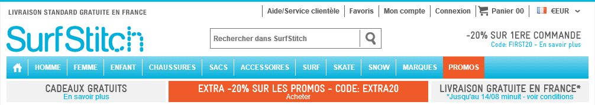
x
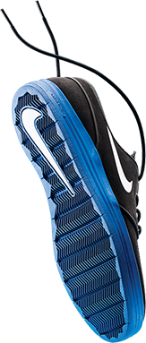
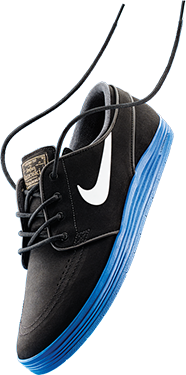
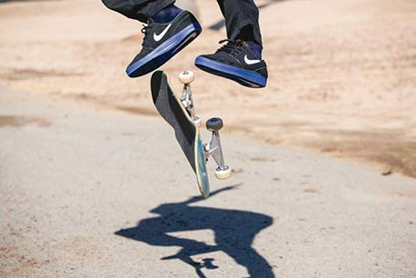
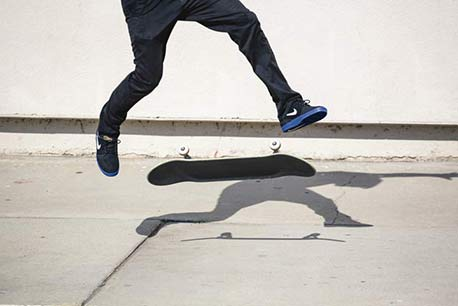
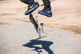
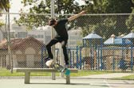
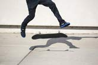
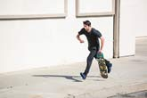
PROTECTION OPTIMALE
CONTRE LES CHOCS
ET EXCELLENT CONTRÔLE
DU SKATEBOARD
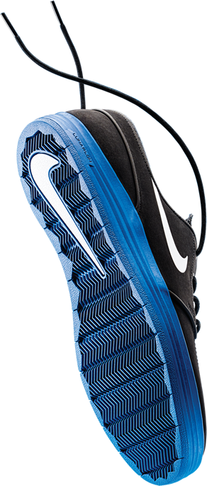
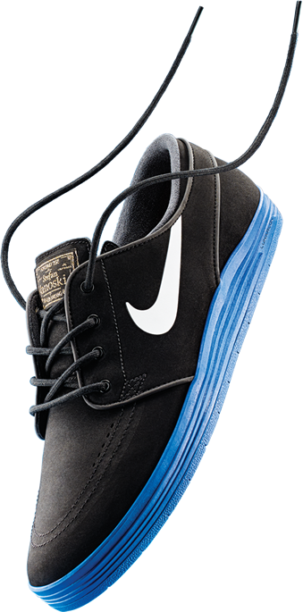
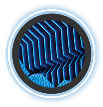
Semelle extérieure avec motif à chevrons pour une résistance, une flexibilité et une adhérence optimales
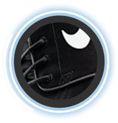
Empeigne en daim, en cuir et en nubuck pour un maintien et un confort supérieurs
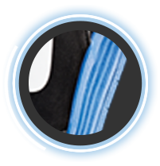
Amorti Lunarlon ultra-léger offrant un excellent rebond pour une absorption des chocs à la fois souple et performante
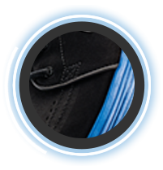
Structure autoclave qui fixe la semelle d'usure à l'empeigne pour un look et une sensation classiques et aérodynamiques
précommanez-les